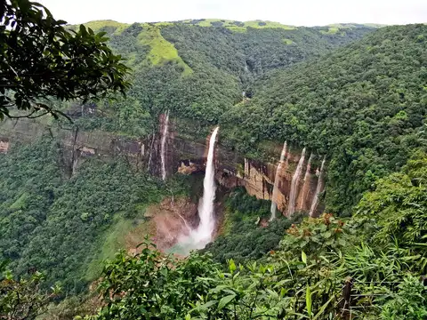
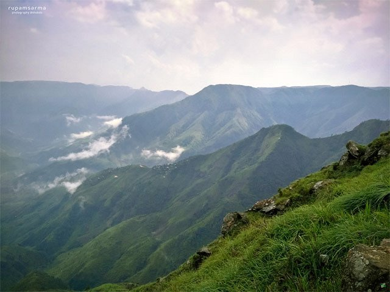
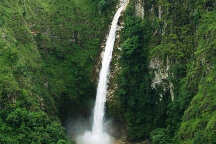
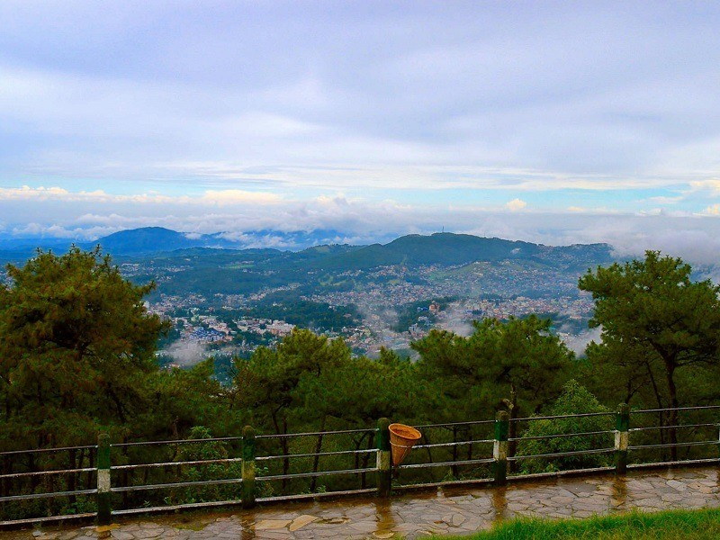
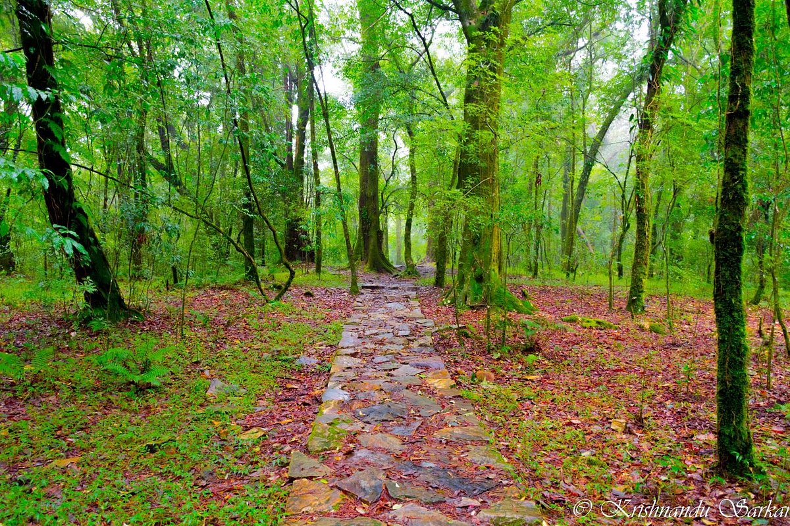
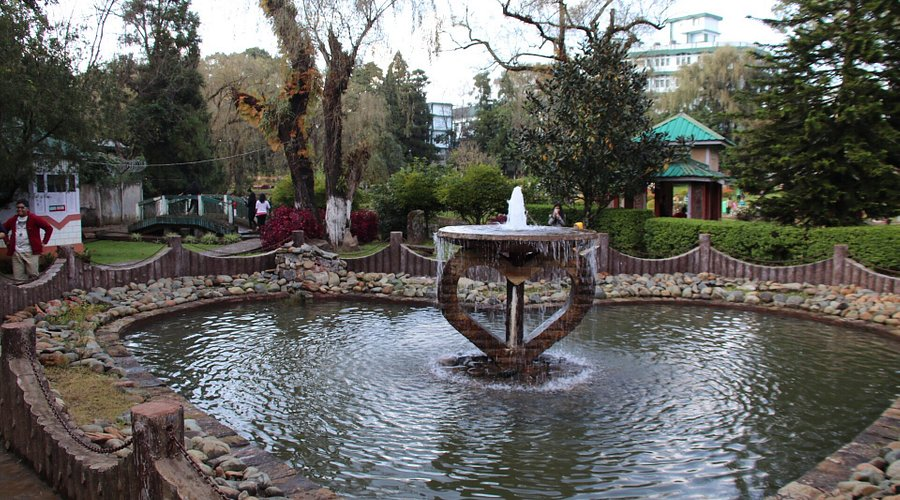
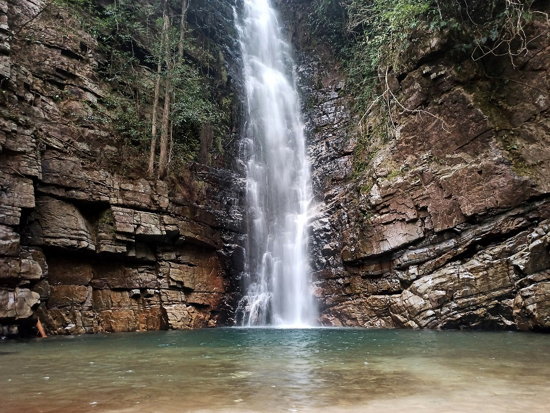
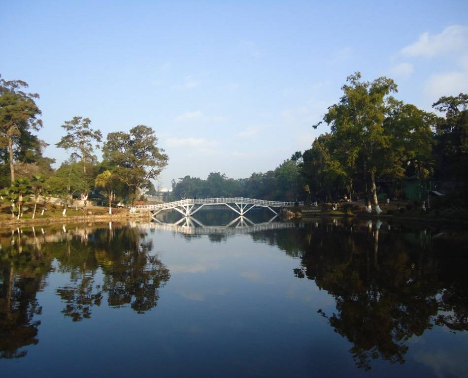
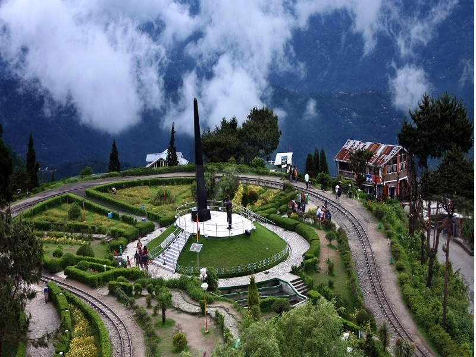
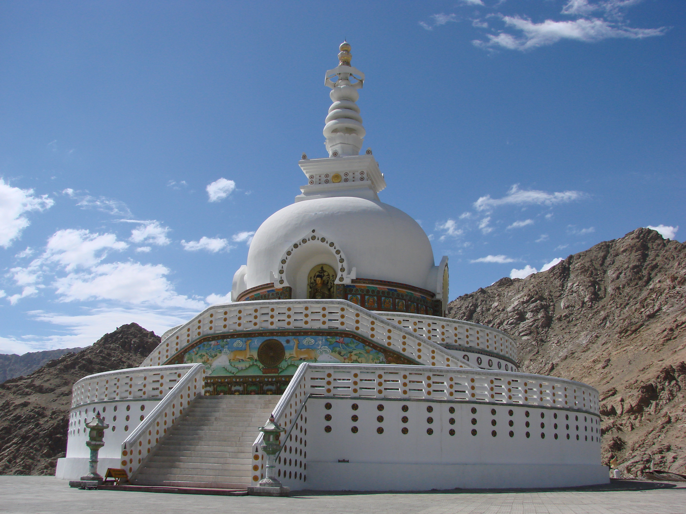

Elephant Falls in Shillong is a popular tourist destination known for its three-tiered waterfall and
natural beauty.
It's a great spot for sightseeing, photography, and enjoying the peaceful surroundings.
1. Three-tiered waterfall:
The falls consist of three distinct levels, each with its own charm and appeal.
2. Easy access to the first level:
The first level of the falls is easily accessible and can be enjoyed by everyone.
3. Steep descent to the lower levels:
The second and third levels require a more strenuous descent, involving stairs, and may be
challenging for those with
knee problems or the elderly.
4. Scenic beauty:
The falls are surrounded by lush greenery, offering a picturesque setting for sightseeing and
photography.
5. Tranquil atmosphere:
The falls provide a peaceful and relaxing environment, allowing visitors to connect with nature.
6. Proximity to Shillong:
Located just outside Shillong city, it's a convenient day trip destination.

Laitlum Canyons, located near Shillong, Meghalaya, is a breathtakingly beautiful natural landscape known
for its deep
valleys, steep cliffs, and rolling hills, often shrouded in mist. It's a popular spot for trekking,
sightseeing, and
photography, offering panoramic views and a sense of tranquility.
1. Scenic Beauty:
The canyons boast stunning views of deep valleys, steep cliffs, and rolling hills, often enveloped in
mist, creating a
picturesque and dramatic landscape.
2. Trekking and Hiking:
It's a popular destination for trekking and hiking, with various trails offering different perspectives
of the canyons
and surrounding areas, including a 6 km round trip trek to Smit Village.
3. Panoramic Views:
The canyons offer panoramic views of the valleys below, making it a great spot for photography,
particularly at sunrise
and sunset.
4. Cultural Significance:
The canyons are located within the Khasi tribal territory, and the Khasi people have a deep connection
to the land and
its natural beauty.
5. Accessibility:
While the canyons are a bit disconnected, they are accessible by winding roads through verdant
landscapes, with the
nearest major town being Shillong. Smit village is a nearby landmark, and local transportation or taxis
can be used to
reach the canyons from there.

Sweet Falls, located near Shillong, India, is a stunning yet dangerous waterfall known for its beauty
and perilous
nature. It's a popular spot for tourists seeking scenic views, but due to its treacherous
path and
the falls' powerful
force, swimming or close proximity to the falls is strongly discouraged.
1. Stunning Beauty:
Sweet Falls is known for its picturesque scenery, featuring a narrow, steep cascade of water
surrounded by lush greenery
and pine trees.
2. Dangerous Nature:
The waterfall is considered very dangerous due to its steepness, slippery rocks, and strong currents.
Tourists are
advised to view it from a safe distance and avoid swimming or venturing too close.
3. Location:
Sweet Falls is situated approximately 5 kilometers from Happy Valley in Shillong, Meghalaya, India.
4. Popular Picnic Spot:
Despite the dangers, the falls are a popular picnic spot for locals and tourists, offering a
serene
environment with
opportunities to enjoy the natural beauty.
5. Accessibility:
While accessible by road, tourists are often restricted from getting too close to the waterfall
due
to the treacherous
terrain and safety concerns.

Shillong Peak, the highest point in Shillong, offers panoramic views of the city, surrounding hills, and
valleys, and on
clear days, even the Himalayas. It's located in the Laitkor area and is also part of an Indian Air Force
radar station.
Visitors can enjoy the scenery, use a telescope for a closer look, and explore nearby attractions like
Elephant Falls.
1. Highest Point:
Shillong Peak is the highest point in Shillong, Meghalaya, offering breathtaking 360-degree views.
2. Panoramic Views:
From the peak, visitors can see the entire city of Shillong, the surrounding hills, valleys, and even
the Himalayas on a
clear day.
3. Indian Air Force Radar Station:
The peak is part of an Indian Air Force radar station, requiring visitors to show ID for entry and
potentially surrender
cameras.
4. Telescope and Souvenir Shops:
A telescope is available for a closer look at the scenery, and there are souvenir shops near the peak
selling local
crafts.
5. Nearby Attractions:
Elephant Falls is a short walk from the peak, and other attractions like Umiam Lake and Mawphlang Sacred
Forest are also
relatively close.

The Mawphlang Sacred Forest in Meghalaya, India, is a unique and culturally significant place.
it's
a sacred grove, deeply rooted in Khasi traditions, where nature is
revered and nothing is taken
from the
forest; it's a haven for biodiversity with a rich variety of plant and animal life;
it's a place of
legends and
spiritual beliefs, with stories of deities and ancestral spirits.
1. Sacred Grove:
The forest is a sacred grove, meaning it's a designated area of forest that's been protected and
revered for centuries
due to its spiritual and cultural significance.
2. Khasi Tradition:
The Khasi people, who inhabit this region, have deep-rooted traditions that emphasize the
interconnectedness of nature
and spirituality. They believe the forest is sacred and that it
is home to deities and ancestral
spirits.
3. Biodiversity Hotspot:
The Mawphlang Sacred Forest is not just culturally significant, but also boasts a rich biodiversity,
with a variety of
plant and animal life, including rare species of trees, orchids, and other flora.
4. Legends and Folklore:
The forest is steeped in legends and folklore. The Khasi people believe that the forest is guarded
by deities and that
taking anything from it, even a twig or leaf, would offend them and bring misfortune.
5. Tourist Destination:
Despite the sacred nature of the forest, it is also a popular tourist destination, attracting
visitors
from around the
world who come to experience its beauty and cultural significance.

Lady Hydari Park, now known as Phan Nonglait Park, is a popular public space in Shillong, Meghalaya,
known for its
diverse attractions. It features a mini-zoo, a museum, beautiful gardens, and a small lake. Originally
established in
1937, it has historical significance and is named after Lady Hydari, wife of the first governor of
Assam. The park
offers a peaceful environment for visitors and is a good spot for recreation and relaxation.
1. Historical Significance:
The park was established in 1937 and named after Lady Hydari, reflecting her love for Shillong's
flora.
2. Mini-Zoo:
It houses a mini-zoo with a variety of animals, including antelope and raptors.
3. Beautiful Gardens:
The park features well-maintained lawns, flower beds, and pathways, making it an attractive spot for
walks and
relaxation.
4. Small Lake:
A small lake with pelicans adds to the park's scenic beauty.
5. Recreational Activities:
The park offers facilities for children, including a playground, and is a popular spot for picnics and
leisurely
strolls.

Mawlynnong, often called "God's own garden," is a village known for its cleanliness and natural
beauty, but it doesn't
have a waterfall called Mawlynrei Falls. Several waterfalls are located near
other parts of
Meghalaya, like the Elephant
Falls, Seven Sisters Falls, and Nohkalikai Falls,
which are popular tourist destinations.
1. Cleanliness:
It's renowned for its cleanliness, earning the title "Asia's Cleanest Village".
2. Living Root Bridges:
Mawlynnong is famous for its unique living root bridges, a natural wonder created by guiding
the
roots of rubber
trees.
3. Mawlynnong Waterfall:
While the village itself is a popular tourist spot, the "Mawlynnong Waterfall" is not a well-known
or prominent feature.
There are other waterfalls in Meghalaya that are more popular.
4. Tourism:
Mawlynnong attracts tourists interested in its unique culture, cleanliness, and natural beauty.
5. Location:
Mawlynnong is in the East Khasi Hills district of Meghalaya, India.
It's important to note that the
search results don't mention any specific waterfall called Mawlynrei
Falls within
Mawlynnong.
The focus is on the village's overall cleanliness and natural attractions, including the
living root
bridges.

Ward's Lake, also known as Pollock's Lake, is a popular man-made lake and botanical garden in Shillong,
Meghalaya. Key
points include its historical significance as a recreational spot for British officials, its scenic
beauty with a garden
and bridge, and activities like boating and feeding fish. It's a well-maintained park, perfect for
relaxing, and a
popular destination for both locals and tourists.
1. Historical Significance:
Commissioned by Sir William Ward and built by Colonel Hopkins in 1894, it served as a recreational area
for British
officials.
2. Scenic Beauty:
Surrounded by a lush garden, flowerbeds, and cobblestone footpaths, it's a picturesque spot in the heart
of
Shillong.
3. Recreational Activities:
Visitors can enjoy boating, feed the fish, or simply stroll along the pathways and enjoy the
scenery.
4. Botanical Garden:
The lake is part of a larger botanical garden, featuring various plants and flowers, making it a green
oasis in the
city.
5. Popular Destination:
It's a popular spot for both locals and tourists, offering a peaceful environment for relaxation and
recreation.

Batasia Loop, a spiral railway track in Darjeeling, is known for its panoramic views, engineering
marvel, and war
memorial. It offers stunning views of the Kanchenjunga mountain peak and
surrounding landscape. The
loop was designed to
help the toy train navigate the steep slopes.
Additionally, it features a war memorial dedicated to
Gorkha soldiers who
died in various wars after
India's independence.
1. Engineering Marvel:
The spiral railway loop was built to negotiate the steep gradient of the mountains, allowing the
toy
train to ascend and
descend smoothly.
2. Panoramic Views:
Batasia Loop provides a 360-degree view of the Darjeeling landscape, including the Kanchenjunga
mountain range, making
it a popular spot for photography and sightseeing.
3. War Memorial:
The war memorial at Batasia Loop honors the Gorkha soldiers who sacrificed their lives in various
wars after India's
independence.
4. Eco Garden:
The loop also houses an Eco Garden, which features organic farming practices and a variety of rare
and endangered plant
species.
5. Toy Train Ride:
A ride on the Darjeeling Himalayan Railway, which passes through Batasia Loop, is a memorable
experience, offering
scenic views and a glimpse into the region's history.

The Japanese Peace Pagoda in Darjeeling is a serene Buddhist monument built to promote peace and
harmony, particularly
after the devastation of Hiroshima and Nagasaki. It is a popular tourist attraction known for its
peaceful atmosphere,
beautiful architecture, and panoramic views. The pagoda is a symbol of unity among all religions and is
open to people
of all faiths.
1. Symbol of Peace and Harmony:
The pagoda was built to promote peace and harmony among all people, regardless of their religion or
background, and to
serve as a reminder of the horrors of war.
2. Architectural Significance:
It's a beautiful, white-marble structure with four golden statues of Buddha representing the cardinal
directions. It is
adjacent to a Japanese Buddhist temple, built in a traditional Japanese style.
3. Spiritual Retreat:
The pagoda offers a tranquil environment for meditation and reflection, attracting those seeking inner
peace.
4. Panoramic Views:
The hilltop location provides stunning views of the surrounding hills, valleys, and the majestic
Kanchenjunga mountain
range.
5. Accessible and Welcoming:
The pagoda is easily accessible by car or a pleasant walk, and it is open to visitors of all faiths.